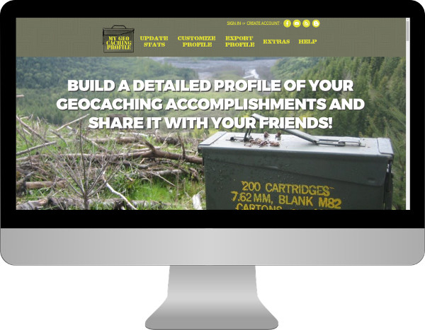
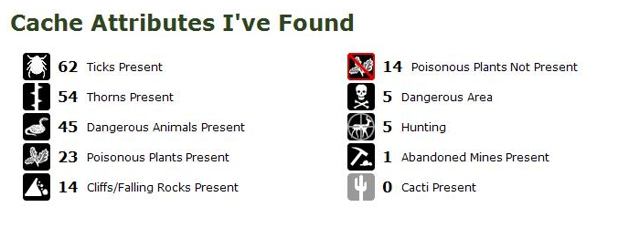
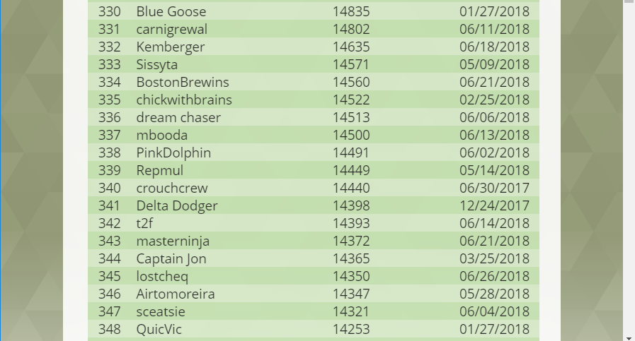
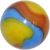
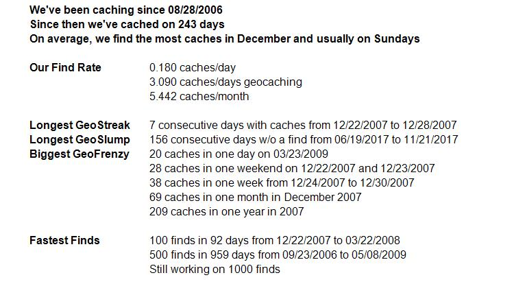
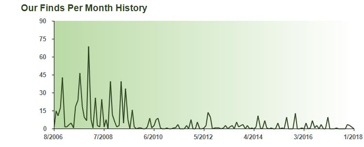
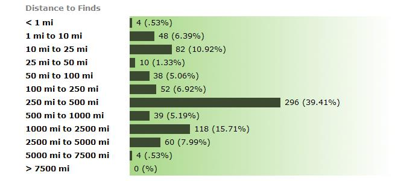
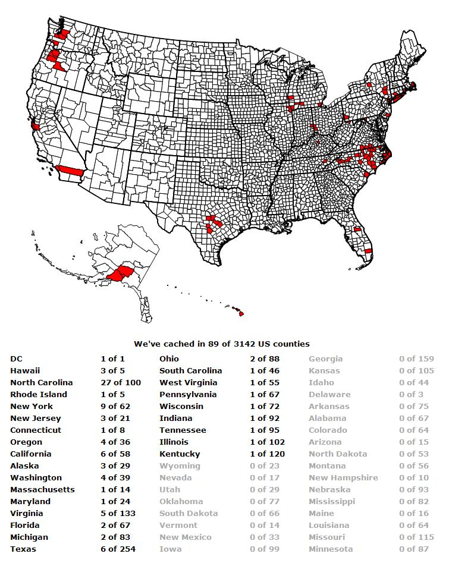
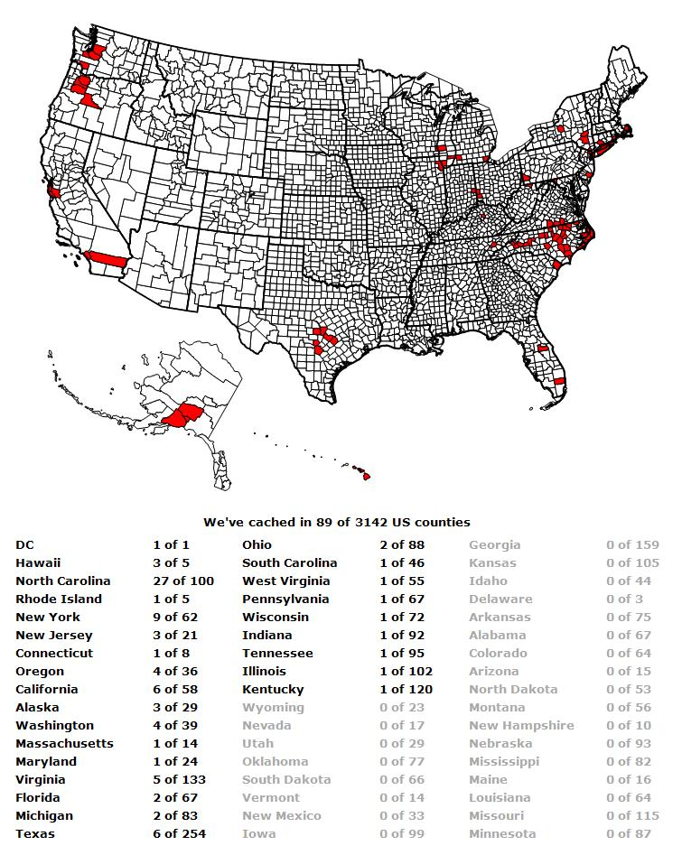
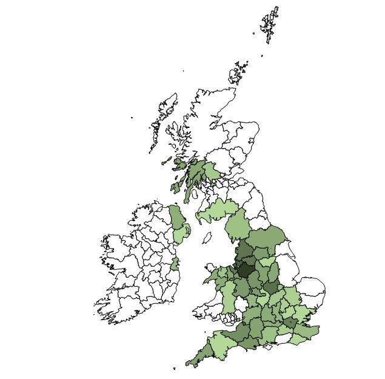

What I Learned Making
My Geocaching Profile.com

In 2007, I co-created, designed, and developed mygeocachingprofile.com from scratch. The site is a tool used by geocaching
hobbists to generate an attractive set of images detailing their geocaching adventures and feats. For example,
the site produces statistics about how many geocaches the user has found, graphs detailing when the finds were
made, maps showing where the finds were made, award badges for completing community challenges, and much more.
The site was a success and eventually we decided to sell it to Groundspeak, Inc. Groundspeak is the company that
runs the entire geocaching game. They integrated some of my code into their main geocaching.com site and then
decided to also keep the original mygeocachingprofile.com site live and hired me to maintain it, develop new
content, and support its user base. I continue in that role today.

I Learned How to Handle a Full Stack Development Project
Creating mygeocachingprofile.com meant developing across the full development stack. I originally worked with a 3rd party
hosting platform to serve the site and later teamed with the development team at Groundspeak to migrate everything
to their internal servers. I configured IIS to host the site and control file access and security permissions.
I created a MS SQL Server database to store user data and wrote SQL to query the data. The site uses ASP.NET
coded in C# for the bulk of its server side logic and the front-end is written in HTML, CSS, and Javascript.
My strongest skills lie in front end development, but producing a site from scratch and working across the full
stack has been invaluable for understanding how websites work.

I Learned How to Handle Complex XML Parsing
All Geocachers have access to a personal XML file from the geocaching.com site that contains information about the
geocaches they've found. Mygeocachingprofile.com allows users to upload that file and then kicks off a process
where the XML file is read and analyzed. The XML data is used to generate statistics, charts, maps, badges, and
more. Designing and programming this process taught me how to properly crawl through XML files. That knowledge
has been useful in working with the more popular modern-day JSON format used by APIs.

An example of data pulled from an XML file and turned into an image

I Learned How to Create, Design, and Maintain a MS SQL Database
Mygeocachingprofile.com has tens of thousands of users each with their own authentication credentials, preferences, and geocaching
data. All of this information is held and secured in a MS SQL database. Designing, building, and using this relational
database has given me experience with the MS SQL application, writing SQL queries, securing frontend inputs from
database attacks, and developing code that more efficiently handles database connections.

The site also ranks cachers on various statistics. All this info is stored in the backend database.

I Learned How to Code Several Data Visualization Tools
Each geocacher has a huge amount of data associated with their caching activity. Geocaching data includes the types
of geocaches found, the dates those caches were originally placed and found, latitude/longitude of the cache
locations, ratings of the find difficulty and terrain difficulty, and much more. Geocachers want to see this
data analyzed and presented in a logical and attractive way. I've programmed several visualization tools to present
this data and the project has provided me a deeper understanding of the art and science of data visualization.
I've worked with charts, graphs, lists, maps, statistical analysis, dynamic color shading, and have tackled the
challenge of creating tools that are scalable for any geocaching data set.

An example of statistics regarding a cacher's activity

An example of a line graph showing a cacher's activity over time

An example of a bar graph showing the distance of caches from the cacher's home

I Learned How to Use Shapefiles to Analyze and Present Geospatial Data
Shapefiles are a mapping format developed to hold geographic information along with associated shape vectors. They
can be queried for information. For example, one can find out which country shape contains a certain latitude/longitude.
Their data can also be extracted into a programmatic object, styled, and drawn to an image. These characteristics
made them perfect for locating geocaching finds on various maps and then drawing maps for users to enjoy.
After working on mygeocachingprofile.com for years, I’m now well versed in the shapefile format, GIS tools for reading shapefiles, the Sharpmap .NET helper library, and complex geometric calculations to find where shapes intersect. I also have gone down many geographic rabbit holes including the several historical county divisions in England, the true nationalities of very small Caribbean islands, and disagreements over the county line demarcations in Texas! 
After working on mygeocachingprofile.com for years, I’m now well versed in the shapefile format, GIS tools for reading shapefiles, the Sharpmap .NET helper library, and complex geometric calculations to find where shapes intersect. I also have gone down many geographic rabbit holes including the several historical county divisions in England, the true nationalities of very small Caribbean islands, and disagreements over the county line demarcations in Texas! 
An example of an image created from a US county shapefile

An example of an image created from a UK county shapefile
I Learned How to Support and Engage a 30,000+ User Base
As mygeocachingprofile.com has grown, I've had to build a support infrastructure for my users. I built a Help and
FAQ page, a contact form for submitting questions and suggestions, and a blog and facebook page for announcing
updates. Each week, I engage directly with my users by answering questions and considering suggestions for the
site. I've learned how to identify common questions and then redesign parts of the site to decrease confusion
and thereby decrease support emails. Direct engagement with the community has been invaluable for understanding
how geocachers use the site and what type of features they want to see in the future.